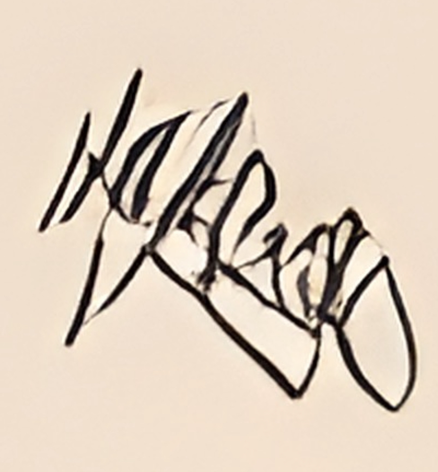
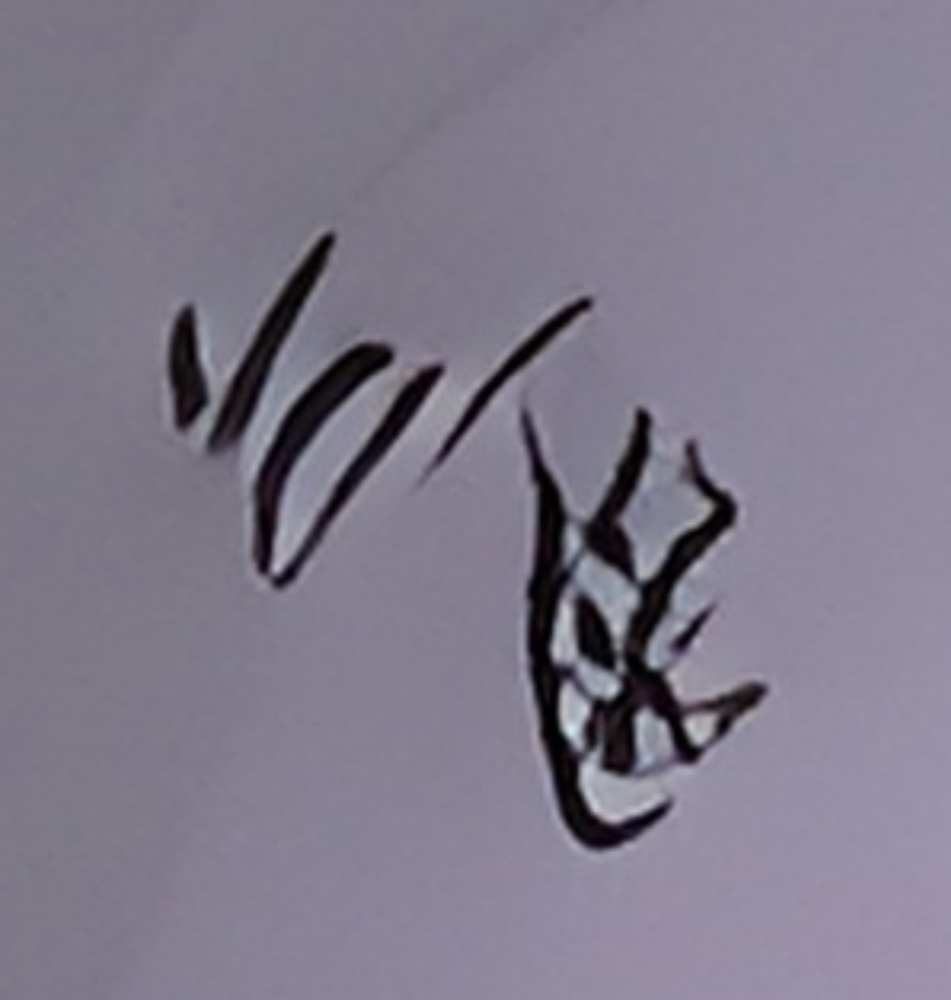
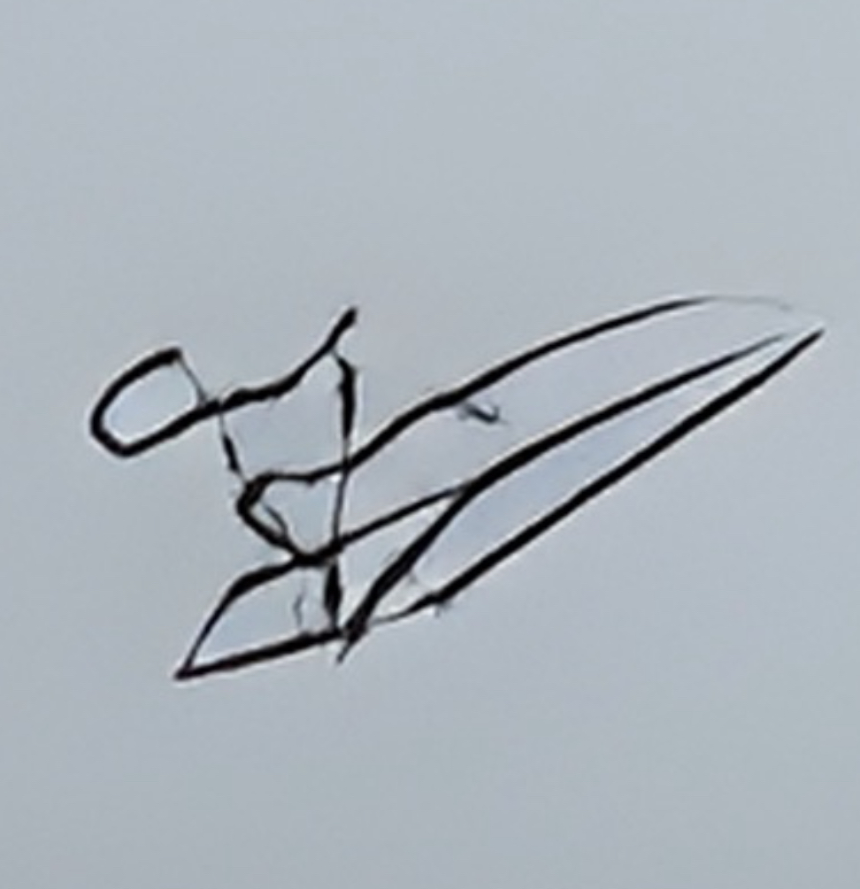
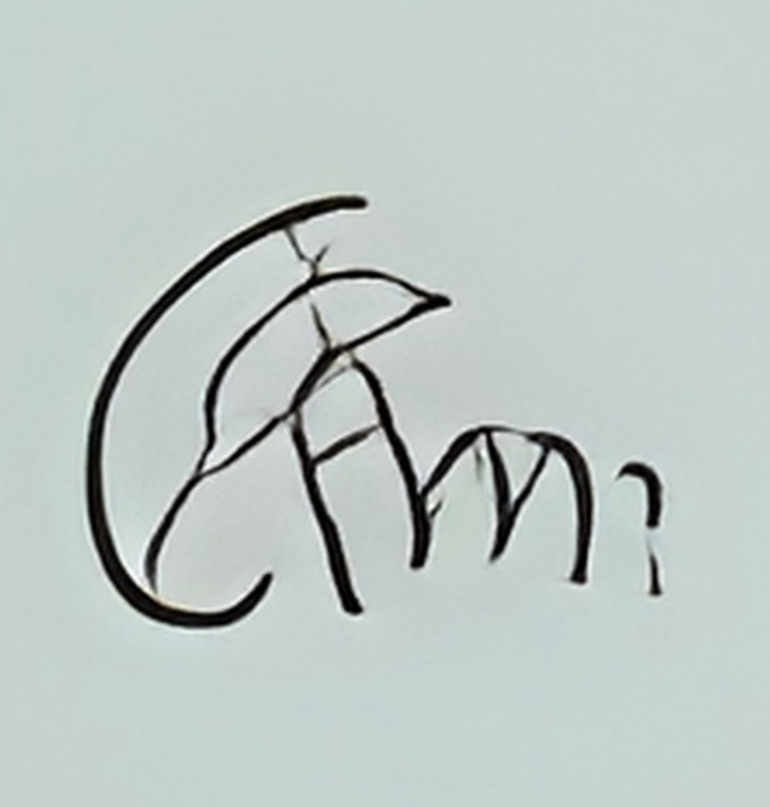
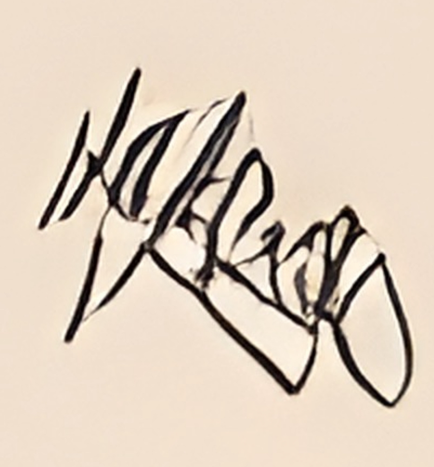
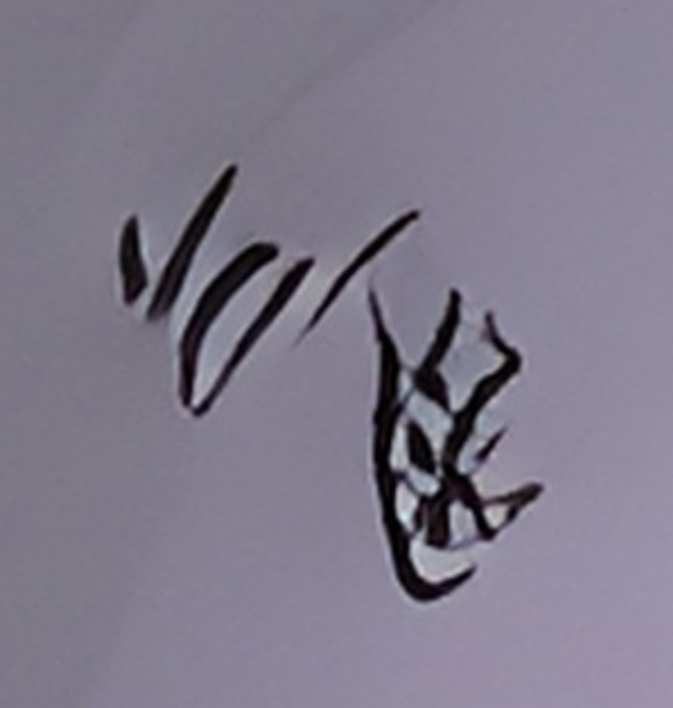
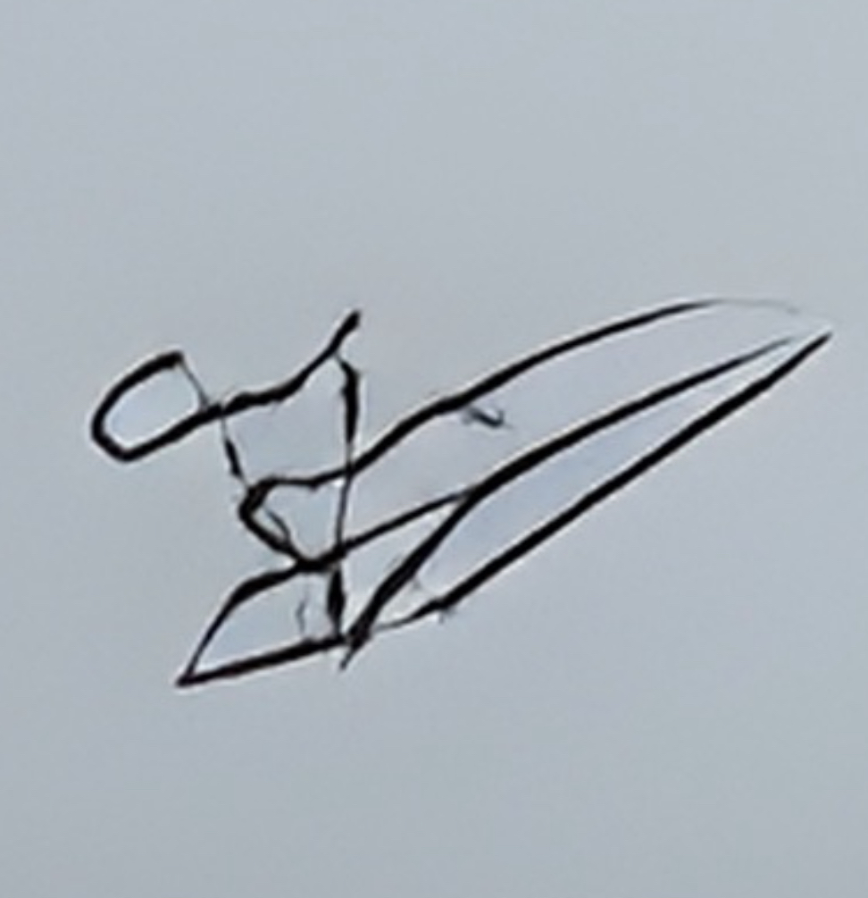
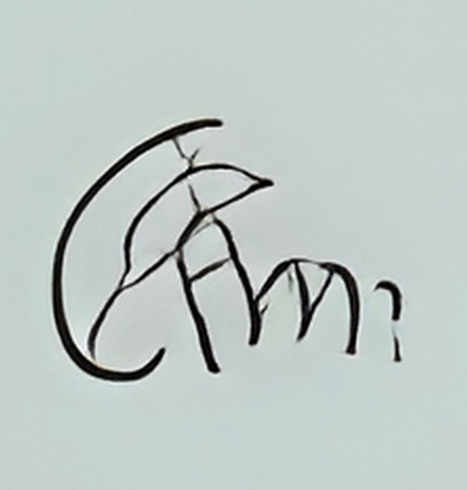
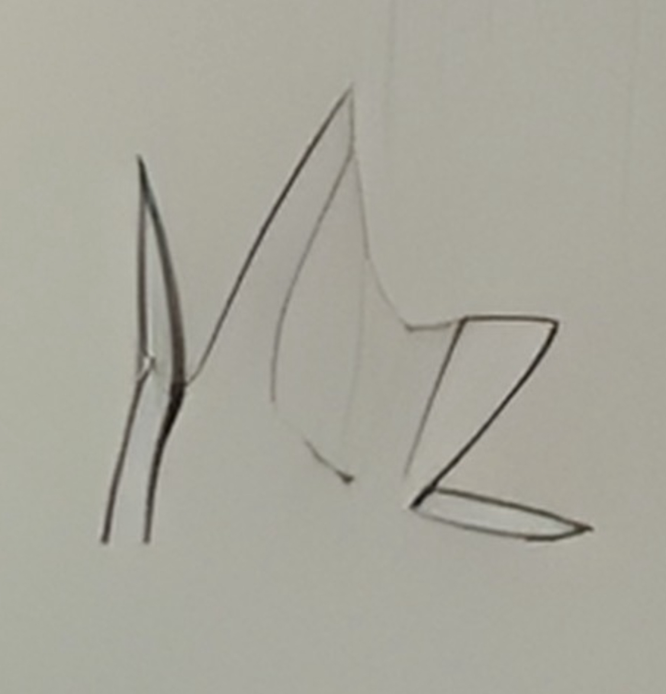
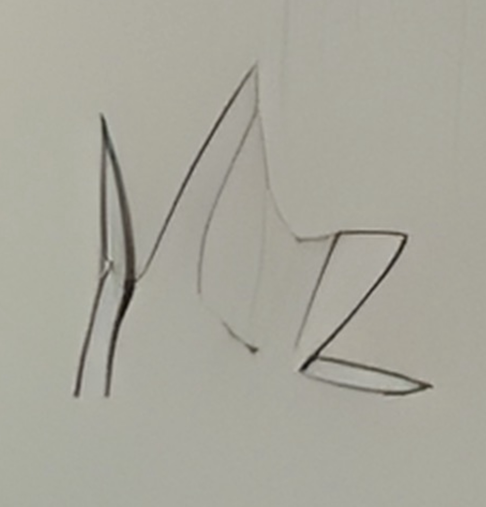

a visual artifact amongst others that publicly raises copyright and identification issues is the latent presence of ghost signatures. these asemic scribble ai-generated artist signatures that can be found in some of the generated selfies. As visual artifacts they do not serve the function of signing an artwork they are instead understood by the generative model solely as a visual and stylistic fragment. as such they are symptomatic of technologies whose purpose is not to understand the social complexities of an image, but rather on how to discretize the entangled elements within it from visual fragments to gimmickry.
 







 
